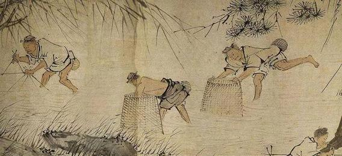

中国古代农业百科全书，系统总结了北方农业生产的丰富经验，涵盖耕作、施肥、种子处理、轮作等核心技术，对后世农学影响深远。

北魏统一北方后，农业生产逐步恢复。由于长期战乱，土地荒芜，粮食产量不足，亟需一套科学的农业技术体系来指导生产。贾思勰结合历代农学著作和自己的实践经验，撰写成《齐民要术》一书。
该书系统总结了北方农业生产的各项技术，不仅记录了耕作、施肥、播种等基础技术，还涉及养殖、加工、酿造等领域，是中国古代农学的集大成之作。
通过深耕打破土壤板结，改善土壤结构，增加通气性和保水性，促进作物根系发育。贾思勰强调"凡耕高下田，不问春秋，必须燥湿得所为佳"，显著提高了作物产量和质量。
《齐民要术》总结了一套科学的施肥方法，包括使用粪肥、绿肥和堆肥等有机肥料。贾思勰提出"粪多力勤"的原则，强调施肥要适量、适时，根据不同作物和土壤条件选择合适的肥料。
书中详细记载了多种种子处理方法，包括盐水浸种、骨汤拌种、蚕粪拌种等。这些方法不仅能提高种子的发芽率，还能杀菌防虫，促进幼苗健壮生长，比欧洲早1300年。
贾思勰系统总结了轮作、间作和套种的经验，提出合理的土地利用方案。轮作可以保持土壤肥力，减少病虫害；间作和套种则提高了土地利用率，是中国古代可持续农业的典范。
《齐民要术》记载了使用绿豆等豆科植物作为绿肥的技术。豆科植物能固定空气中的氮素，翻入土中后可增加土壤肥力，相当于"天然氮肥厂"。欧洲18世纪才推广绿肥，中国早了1200年。
书中详细记录了果树嫁接的技术，包括芽接、枝接等方法。贾思勰指出"梨接棠（杜梨）"成活率最高，并详细说明了不同果树嫁接的时机和方法，可抗病增产，现代果园仍沿用。